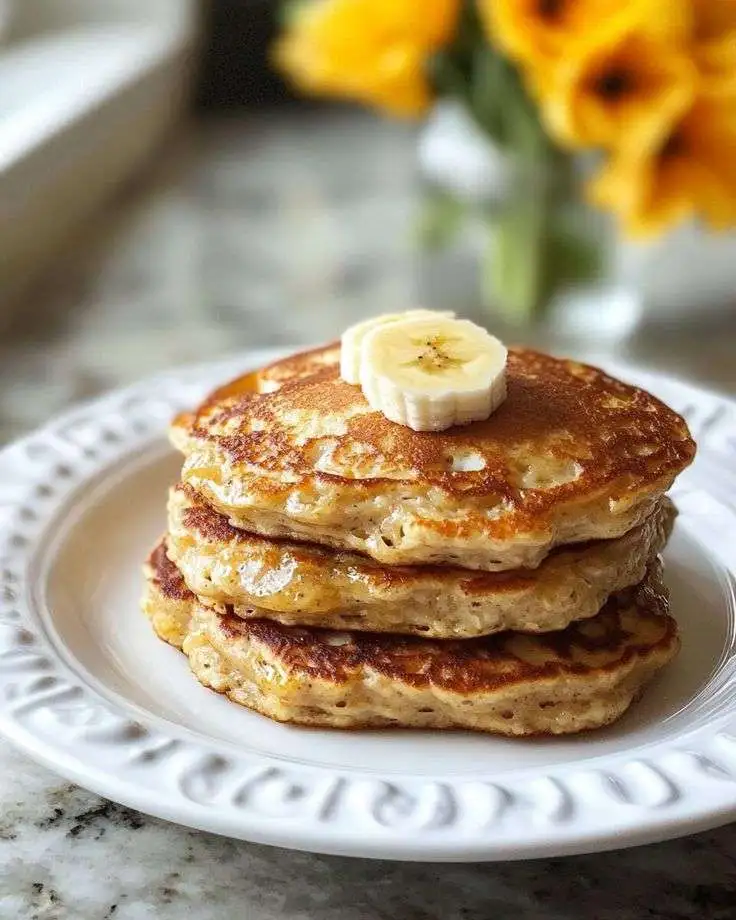

Ingredientes:
- 2 bananas bem maduras
- 2 ovos
- 3 colheres (sopa) de aveia em flocos finos
- 1 colher (chá) de fermento em pó
- Canela a gosto
- Mel ou calda para servir

Modo de Preparo:
- Amasse as bananas e misture com os ovos, aveia, fermento e canela.
- Aqueça uma frigideira untada.
- Coloque pequenas porções da massa e doure dos dois lados.
- Sirva quente.